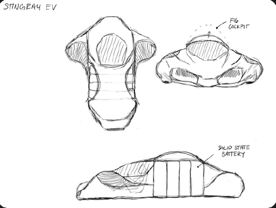
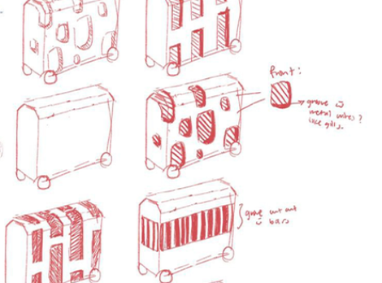
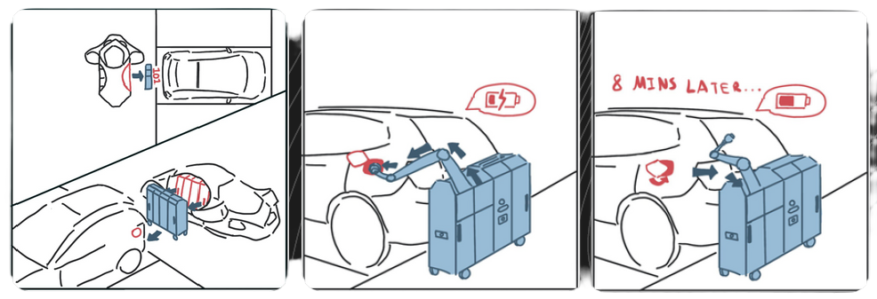
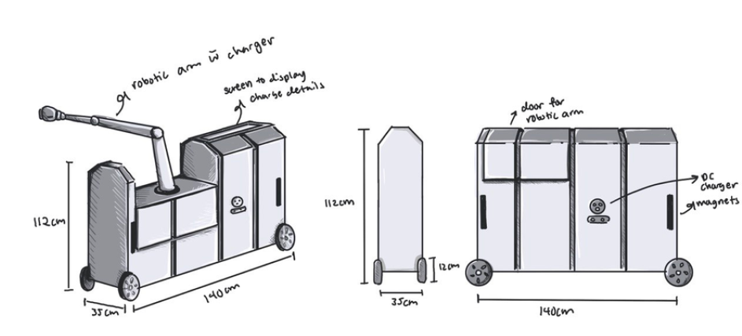
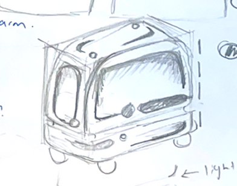
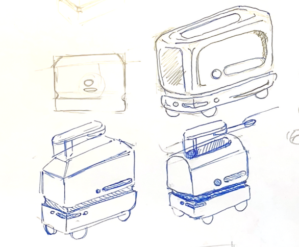
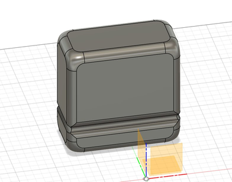
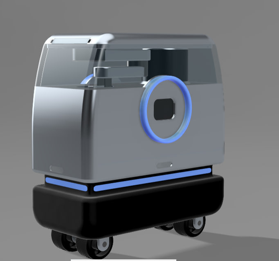
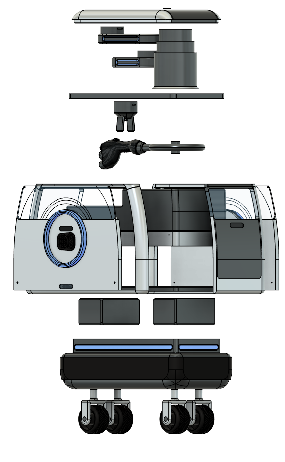
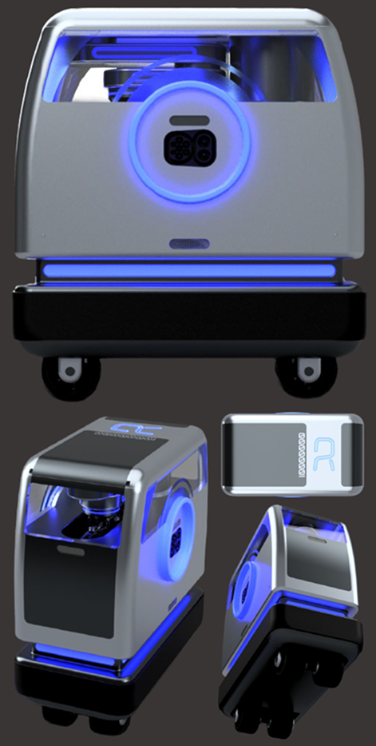

The Future of Autonomous Urban EV Charging
Designing a mobile, autonomous charging pod to eliminate fixed-bay congestion in Singapore's dense carparks.
The Context & The Pivot
Use a provided robocar chassis to create a functional vehicle concept for the year 2030 — purpose-built for Singapore's urban environment.
Our initial concept focused on emergency roadside assistance for stranded vehicles. Evaluating feasibility in Singapore forced us to weigh our options:
Roadside Assistance (initial concept)
Low frequency of use, high operational readiness cost.
Autonomous EV Charging (the pivot)
High daily usage frequency, with high scalability and long-term utility.
Defining The Problem
Bay Hogging
EV bays stay occupied for hours post-charge, blocking other users from accessing them.
Land Constraints
Space constraints in older car parks concentrate charging infrastructure in select locations, leaving coverage gaps in residential and mixed-use zones.
Overstay Penalties
Users need to constantly remember to unplug their chargers once done, to avoid overstay penalties.
"What if the charger came to you — instead of you waiting for a bay?"
PIP (Portable Integrated Pod): instead of drivers hunting for fixed-bay chargers, PIP is deployed autonomously by a mothership (RAIA) to charge vehicles directly in standard parking spots.
Form Finding: Aesthetics vs. Function
Phase 1 — The Mantaray
Our early iterations explored organic, animal-inspired forms, specifically mimicking the skeleton and spots of a manta ray. While visually striking, the shape was too intrusive for tight carparks and lacked the flat surfaces needed for seamless magnetic docking.

Manta ray form sketches

Early silhouette exploration

Docking mechanism storyboard

Chassis layout & dimensions
Phase 2 — Function-Led Minimalism
We stepped back and prioritised PIP's core mechanical needs: a locking mechanism, a charging port, and indicator lights.
- The Base: a dark grey aluminium and rubber base creates a grounded, bottom-heavy look for perceived stability.
- The Body: matte white finishes paired with blue-tinted glass give a clean, approachable aesthetic while letting users see the robotic arm inside.
- The Interface: an intuitive circular LED indicator pulses green to signal energy transfer, turning red when onboard cameras detect nearby obstacles.

Form exploration sketch

Iteration sketches

3D CAD block-out

Final form render with robotic arm & LED ring
Overcoming Hardware & Engineering Constraints
Engineering for Tight Spaces
To make PIP genuinely autonomous in dense HDB carparks, we had to engineer around strict spatial and mechanical limits:
- SCARA arm redesign: the initial robotic arm sagged badly under 10kg of torque on the motor shafts. We redistributed the load-bearing structure onto the chassis and hollowed out the arm links, reducing weight by 40%.
- Swerve drive manoeuvrability: traditional steering needs too much clearance, so we integrated a swerve-drive system that lets PIP glide laterally and rotate 360° to align with charging ports in narrow aisles.
- Visual odometry: PIP navigates without GPS. Low-power Sony IMX219 camera sensors on all four sides let the pod track its environment and avoid obstacles autonomously.
Mechanical Architecture
An internal breakdown of PIP's modular components—featuring an enclosed multi-axis robotic arm, integrated DC fast-charging nozzle, swappable battery units, and a 4-wheel independent caster drivetrain.

Exploded CAD assembly breakdown

Multi-angle lighting & chassis renders
Autonomous Docking Demonstration
Simulation of PIP's autonomous alignment, swerve-drive navigation, and robotic arm charging sequence
The Wider Ecosystem: Designing for RAIA
Designing the Interior Experience
Because RAIA is fully autonomous in most scenarios, the interior needed to maximise space and flexibility for the rare occasions manual transport is required.
- The collapsible steering wheel: inspired by modular gaming consoles, telescopic posts let the handles collapse inward or adjust to the driver's grip width.
- The modular seat: moving away from bulky car seats, we designed a minimalist chair that folds into a seamless, compact rectangle. A built-in click-lock mechanism makes it easy to deploy or remove, turning it into a portable resting stool.
Key Outcomes
PIP's design — a multi-modal autonomous charging robot built for multi-storey carparks, enabling charging while parked in any standard bay.
Any standard bay becomes a charge-capable spot — no dedicated EV infrastructure required.
Overstay penalties eliminated, as PIP disengages and returns autonomously once charging is complete.
Multiple PIPs can be deployed per RAIA unit, multiplying effective charging capacity without additional land.
Showcased at SUTD's end-of-year showcase for evaluation in other localities.